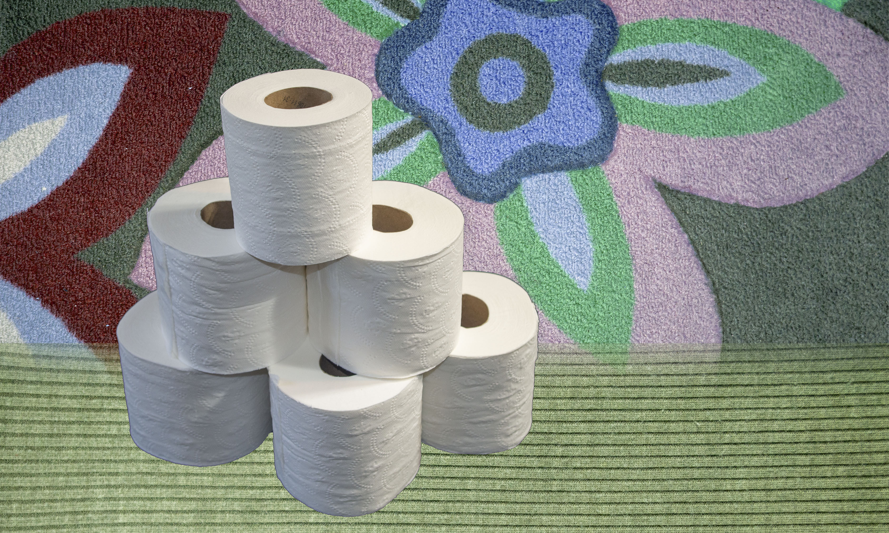

Near the border of Bathroom and Hallway is the Paper Pyramid. No one knows where it came from. It’s foundations are made of ice, and it’s covered in thin white paper tapestries. There are still archeological digs going on in the area, but some of it is open to tourists in the summertime. Inside are vast, circular chambers with openings up to the sky. Historians believe that it might have served as an ancient temple of worship and a shelter or storage space for when great storms ravish Bathroom.